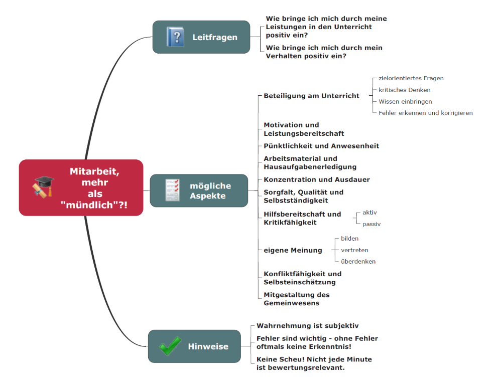

Kapitel 0: Organisatorisches
In diesem Kapitel finden Sie ...
- ... Zielformulierungen im Lernfeld 12,
- ... Bewertungshinweise sowie
- ... Organisatorisches zum Unterricht.
Zielformulierung und Inhalte
Didaktischer Wizard
- Sie finden die didaktische Planung der MMBbS im Didaktischen Wizard.
- Die Lernsituationen sind auch direkt unter GitHub - (Herr-NM) abrufbar.
- Dieser Moodle-Kurs ist als MkDocs-Seite unter GitHub.io - (Herr-NM) frei einsehbar.
Inhalt der Lernsituationen
Die Lernsituationen der Lernfelder werden aus den Lernfeldbeschreibungen des jeweiligen Rahmenlehrplans abgeleitet. Dazu dient in diesem Bildungsgang der Rahmenlehrplan der Kaufleute für Digitalisierungsmanagement (KDM).
Im Lernfeld 12 haben die KDM auf das Berufsbild spezialisierte Inhalte.
| Nr. | Lernsituation | Unterrichtsstunden |
|---|---|---|
| LS 12.1 | Strategische Analysen für Geschäftsmodelle durchführen | 15 UStd. |
| LS 12.2 | Unternehmen mit dem Business Model Canvas darstellen | 9 UStd. |
| LS 12.3 | Digitale Geschäftsmodelle und Produkte planen | 9 UStd. |
Bewertungshinweise
M|0.0: Zusammensetzung der Note im Lernfeld 12
Die Note im LF12 setzt sich aus drei Anteilen zusammen:
- NM = 3 Std. = 33%
- FR = 4 Std. = 44%
- SR = 2 Std. = 23%
Bei Herrn Neumann teilt sich die Bewertung wie folgt auf:
- Test 1 = 20%
- Abgabe 1 (Gruppenleistung) = 20%
- Test 2 = 20%
- Abgabe 2 (Gruppenleistung) = 20%
- Allgemeine Mitarbeit = 20%
Die Abgaben sind in Moodle durch eine Information (Pill) gesondert gekennzeichnet und in den Handlungsergebnissen des jeweiligen Moodle-Kapitels aufgeführt.
M|0.1: Mitarbeit - mehr als "mündlich"?!

M|0.2: Notenschlüssel der IHK Datei
Bewertungsschlüssel der IHK Hannover
M|0.3: KI-Leitfaden für den Unterricht
Lizenz

Der KDM LF12 Kurs von André Neumann ist lizenziert unter einer Creative Commons Namensnennung - Nicht-kommerziell - Weitergabe unter gleichen Bedingungen 4.0 International Lizenz. Fragen, Hinweise etc. an neumann@mmbbs.de.